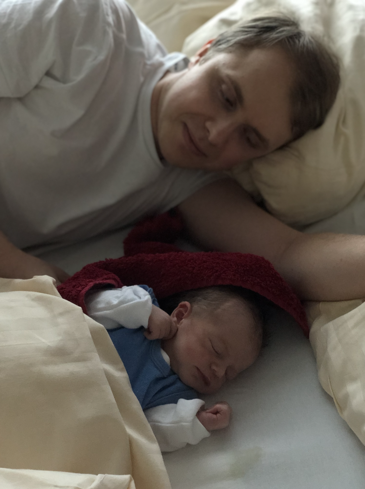

human_fork (2) − A human variant of fork
#include <universe.h>
human_t human_fork (human_t human1, human_t human2);
human_fork (2) causes creation of a new human_t by passing two existing human_t. The estimated execution time of this system call is about nine months. The new human_t (child human) is a mix of human1 and human2, except for the following:
|
• |
The child human has an unique identifier: Linus Urban-Forster. |
||
|
• |
The child human is significantly smaller at first, measuring 50cm and weights 3190g |
||
|
• |
The child human forces syscall completion on a specific date: Mar 2 2020. |
human1 (Bettina) did a tremendous job executing human_fork (2) and, although exhausted, is looking forward to use IPC with child human going forward. human2 (Bernhard) is happy too.
Backend of child human is producing a lot of poop.
